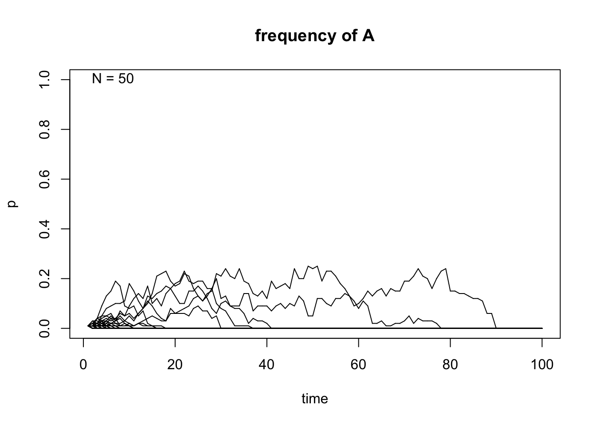
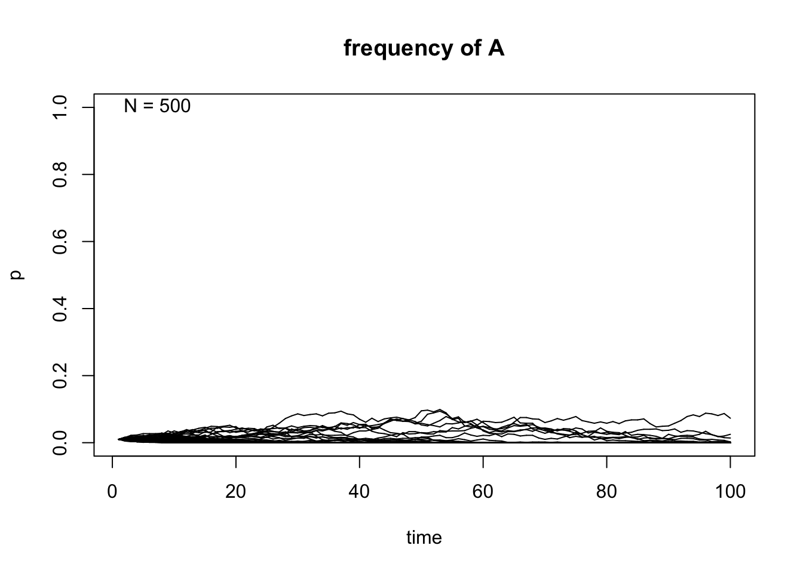
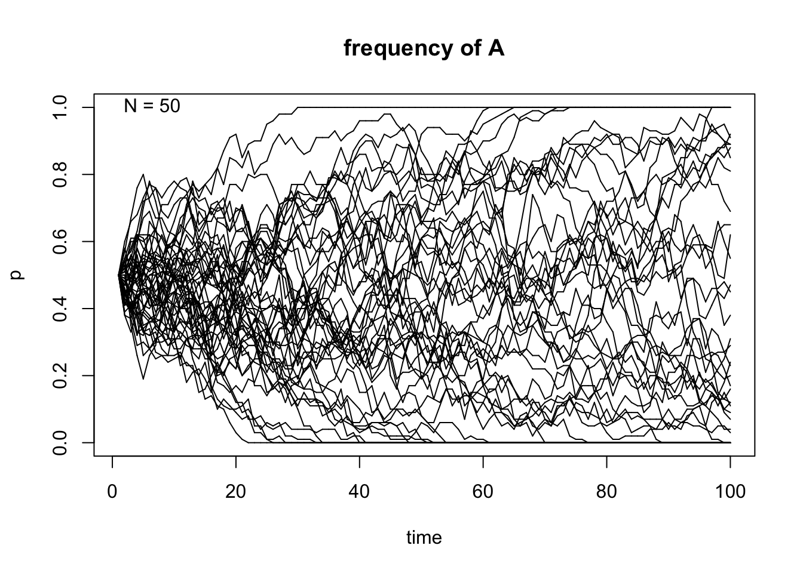
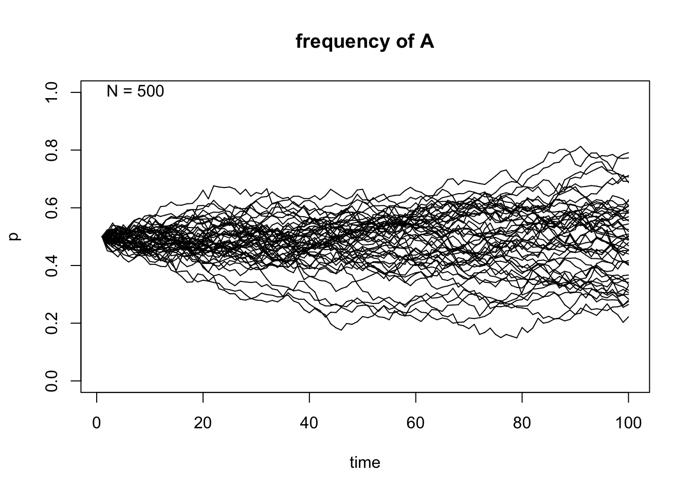
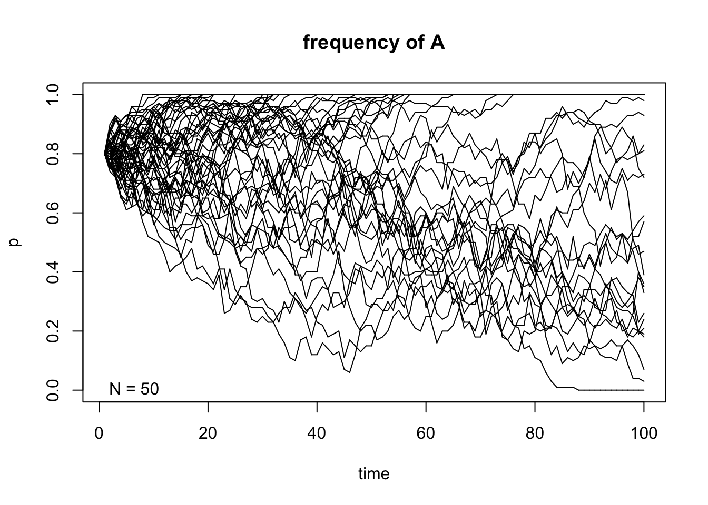
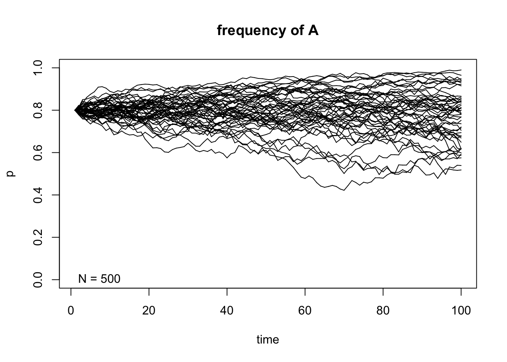

Last updated: 2022-03-18
Checks: 6 1
Knit directory:
~/Documents/Winter_Quarter_2022/Fundamentals/jaurbanChicago.github.io/bin/
This reproducible R Markdown analysis was created with workflowr (version 1.7.0). The Checks tab describes the reproducibility checks that were applied when the results were created. The Past versions tab lists the development history.
The R Markdown file has unstaged changes. To know which version of
the R Markdown file created these results, you’ll want to first commit
it to the Git repo. If you’re still working on the analysis, you can
ignore this warning. When you’re finished, you can run
wflow_publish to commit the R Markdown file and build the
HTML.
Great job! The global environment was empty. Objects defined in the global environment can affect the analysis in your R Markdown file in unknown ways. For reproduciblity it’s best to always run the code in an empty environment.
The command set.seed(12345) was run prior to running the
code in the R Markdown file. Setting a seed ensures that any results
that rely on randomness, e.g. subsampling or permutations, are
reproducible.
Great job! Recording the operating system, R version, and package versions is critical for reproducibility.
Nice! There were no cached chunks for this analysis, so you can be confident that you successfully produced the results during this run.
Great job! Using relative paths to the files within your workflowr project makes it easier to run your code on other machines.
Great! You are using Git for version control. Tracking code development and connecting the code version to the results is critical for reproducibility.
The results in this page were generated with repository version 571343e. See the Past versions tab to see a history of the changes made to the R Markdown and HTML files.
Note that you need to be careful to ensure that all relevant files for
the analysis have been committed to Git prior to generating the results
(you can use wflow_publish or
wflow_git_commit). workflowr only checks the R Markdown
file, but you know if there are other scripts or data files that it
depends on. Below is the status of the Git repository when the results
were generated:
Untracked files:
Untracked: .DS_Store
Untracked: .Rhistory
Unstaged changes:
Deleted: New Folder With Items/.DS_Store
Deleted: New Folder With Items/Genetic_Drift_Markov_Chain.Rmd
Deleted: New Folder With Items/_site.yml
Deleted: New Folder With Items/include/footer.html
Modified: bin/Genetic_Drift_Intro.Rmd
Modified: bin/Genetic_Drift_Markov.Rmd
Deleted: index.html
Note that any generated files, e.g. HTML, png, CSS, etc., are not included in this status report because it is ok for generated content to have uncommitted changes.
These are the previous versions of the repository in which changes were
made to the R Markdown (bin/Genetic_Drift_Markov.Rmd) and
HTML (docs/Genetic_Drift_Markov.html) files. If you’ve
configured a remote Git repository (see ?wflow_git_remote),
click on the hyperlinks in the table below to view the files as they
were in that past version.
| File | Version | Author | Date | Message |
|---|---|---|---|---|
| Rmd | fccedde | jaurbanChicago | 2022-03-18 | Updated markov |
| html | fccedde | jaurbanChicago | 2022-03-18 | Updated markov |
| Rmd | af0fd73 | jaurbanChicago | 2022-03-18 | markov html |
| html | 883962f | jaurbanChicago | 2022-03-18 | Updated markov html |
| html | 943c0b9 | jaurbanChicago | 2022-03-18 | Updated markov html |
| Rmd | b65811a | jaurbanChicago | 2022-03-18 | Updated markov rmd |
| html | af0f016 | jaurbanChicago | 2022-03-17 | Added Markov html |
| html | a311740 | jaurbanChicago | 2022-03-17 | Removed all htmls |
| Rmd | 0d8c343 | jaurbanChicago | 2022-03-17 | Updates both rmd and html |
| html | 0d8c343 | jaurbanChicago | 2022-03-17 | Updates both rmd and html |
| html | 112890c | jaurbanChicago | 2022-03-17 | Added Genetic_Drift_Markov.html |
| Rmd | 6b81ff1 | jaurbanChicago | 2022-03-17 | Added Genetic_Drift_Markov.Rmd |
Before getting into the specific details of the relationship between Markov chains and genetic drift, it is necessary to briefly explain what a discrete, finite Markov chain is.
Let´s consider a discrete random variable \(X\), which at time points \(0,1,2,3,...\), takes values \(0,1,2,...,M\). Therefore, it is precise to say that each state \(E_i\), \(X\) takes the value \(i\) [2]. This means that at each state \(E_i\) at some time \(t\), \(X\) is in some state \(E_i\). A variable is said to be Markovian if the probability of a certain outcome in the next time step \(t+1\) depends only on the present state at time \(t\) and is memoryless with regard to any previous time step \(t-1,t-2,...\). Therefore, we can now define a discrete Markov chain as a sequence of discrete random variables in which the probability distribution of the different states at each time \(t\) depends only on the state at time \(t-1\) [1,2].
Here are some important notions on a discrete-time Markov chain
(DTMC) [2,3]. A DTMC is said to be Markovian if: \[
P(E_{n+1}|E_{n})=i,E_{n-1}=i_{n-1},...,E_1=i_1,E_0=i_0)=P(E_{n+1}=j|E_n=i)\\
\] A DTMC is said to be time homogeneous if:
\[
P(E_{n+1}|E_{n})=P(E_i=j|E_{i-1}=i) \space \mathbb{for \space all}
\space n, \mathbb{so} \space P(E_i=j|E_{i-1})=P_{ij}\\
P_{ij} \gt 0;i,j \ge 0; \sum_{j=0}^{\infty}P_{ij}=1 \\
\] Finally, we can describe the randomness of transitioning
between states using a transition probability matrix:
\[
P_{ij}= \begin{pmatrix}
p_{00} & p_{01} & ... & p_{0M}\\
p_{00} & p_{11} & ... & p_{1M} \\
.\\
.\\
.\\
p_{M0} & p_{M1} & ... & p_{MM}
\end{pmatrix} \\
\] Because the transition probability matrix is a stochastic
matrix, all rows must sum to 1.
The states of a discrete Markov chain are classified into the following
categories [2,3,4]:
Next, we are going to classify the chains in two different classes:
For the remainder of this vignette, it is important to denote that we will be working with Markov chains that have no periodicities in them, which hardly arise in any genetical applications [2]. Finally, we need to define the concept of stationary distribution of a Markov chain. A stationary distribution may be defined with the following mathematical terms [3]:
\[ \text{Consider } P^t \text{ as } t \text{ gets large}:\lim_{t\to\infty}(\pi^{(0)})^TP^t=\pi^T\\ \text{The } \pi \text{ vector is the limiting distribution of the Markov chain with stationary property: } \pi^T=\pi^TP \space \mathbb{because} \space \pi_i=\sum_k \pi_kP_{ki} \] For ergodic chains, the limiting distribution is also the stationary distribution and there is only one unique stationary distribution (i.e., equilibrium distribution) [3]. To obtain the stationary distribution of the Markov chain, we can use matrix exponentiation (each row of the resulting matrix will have \(\pi\) in each row), solve linear equations (solve for \(\pi^T=\pi^TP\)), and use eigendecomposition (\(\pi\) is left eigenvector of \(P\), so eigendecomposition can lead to \(\pi\)).
A discrete Markov chain can be quite helpful to describe genetic drift in an ensemble of numerous identical and independent populations of a Wright-Fisher model [1]. A Markov chain model will help us understand how drift modifies, on average, the alleles frequencies of a biallelic locus in various population replicates through time. The transition probability for the Markov chain describing allele frequencies changes in a specific population (from an ensemble of replicate populations) is [3]:
\[ P_{ij}=P(p_{t+1}=\frac{j}{2N}|p_t=\frac{i}{2N})={2N \choose j}(\frac{i}{2N})^j(1-\frac{i}{2N})^{2N-j} \\ \mathbb{E}[p_{t+1}=\frac{j}{2N}|p_t=\frac{i}{2N}]=p_t\\ Var(p_{t+1}=\frac{j}{2N}|p_t=\frac{i}{2N})=\frac{p_t(1-p_t)}{2N} \] This transition probability equation describes the probability that a given Wright-Fisher population with a exactly \(i\) copies of allele \(A\) in generation t has exactly \(j\) copies of \(A\) in generation \(t+1\). This equation is another confirmation that the allele changes between discrete time units is Markovian, which means that the allele trajectories in \(t+1\) will exclusively depend on the frequencies at \(t\)[1-4]. A Markov chain describing genetic drift (no mutation and no selection) can have two absorbing states, which are when the allele frequency \(p_i=0\) (loss) or \(p_i=1\) (fixation) [5]. Besides these two absobing states, allele frequency can, in principle, change from any state to other states in a single generation. However, how big or small is the change between generations, will depend, in principle, in \(N\) and the frequency itself (remember the binomial sampling from the introductory vignette).
We will use some simple code to simulate and model random genetic drift as a simple discrete Markov chain.
# We are going to give some examples of random genetic drift trajectories using the transition probability (Pij).
#We are going to use the CRAN R package learnPopGen created by Liam J. Revell [5]
library(learnPopGen)
# Initial frequency p=0.01,N=50,500 and 50 population replicates
genetic.drift(p0=0.01,Ne=50,nrep=50, time=100, show = "p",pause = 0.1)
| Version | Author | Date |
|---|---|---|
| dcdda13 | jaurbanChicago | 2022-03-18 |
genetic.drift(p0=0.01,Ne=500,nrep=50, time=100, show = "p",pause = 0.1)
| Version | Author | Date |
|---|---|---|
| dcdda13 | jaurbanChicago | 2022-03-18 |
# Initial frequency p=0.5,N=50,500 and 50 population replicates
genetic.drift(p0=0.5,Ne=50,nrep=50, time=100, show = "p",pause = 0.1)
| Version | Author | Date |
|---|---|---|
| dcdda13 | jaurbanChicago | 2022-03-18 |
genetic.drift(p0=0.5,Ne=500,nrep=50, time=100, show = "p",pause = 0.1)
| Version | Author | Date |
|---|---|---|
| dcdda13 | jaurbanChicago | 2022-03-18 |
# Initial frequency p=0.8,N=50,500 and 50 population replicates
genetic.drift(p0=0.8,Ne=50,nrep=50, time=100, show = "p",pause = 0.1)
| Version | Author | Date |
|---|---|---|
| dcdda13 | jaurbanChicago | 2022-03-18 |
genetic.drift(p0=0.8,Ne=500,nrep=50, time=100, show = "p",pause = 0.1)
| Version | Author | Date |
|---|---|---|
| dcdda13 | jaurbanChicago | 2022-03-18 |
After taking a look at these simulations, we can observe that the size of \(N\) indeed affects the variability of the outcome of the random sampling in the Markov chain. We can also see that once \(A\) reaches fixation or gets lost in one of the replicates, it can never get out of that particular absorbing state. Finally, the frequency in each state \(t\) affects the variability of the trajectories and this becomes even more apparent when the allele \(A\) is either close to fixation or loss in each replicate.
One of the caveats of modeling genetic drift as a Markov chain in a Wright-Fisher population is the fact that it becomes mathematically intractable. This means that it is very difficult to obtain simple analytical results on the distributions of allele frequencies after \(t\) generations of genetic drift [6]. We can iterate over and over the Markov chain transition probabilities and we would never derive analytical formulas to describe the allele frequencies distributions. Diffusion theory has been used to approximate certain features of the distribution (it´s still not easy and will probably require some numerical techniques!!!) and other interesting results (fixation probabilities,equilibrium allele frequency spectrum, etc) [6]. You can find more about diffusion approximations of genetic drift in the following vignette.
sessionInfo()R version 4.1.2 (2021-11-01)
Platform: x86_64-apple-darwin17.0 (64-bit)
Running under: macOS Catalina 10.15.7
Matrix products: default
BLAS: /Library/Frameworks/R.framework/Versions/4.1/Resources/lib/libRblas.0.dylib
LAPACK: /Library/Frameworks/R.framework/Versions/4.1/Resources/lib/libRlapack.dylib
locale:
[1] en_US.UTF-8/en_US.UTF-8/en_US.UTF-8/C/en_US.UTF-8/en_US.UTF-8
attached base packages:
[1] stats graphics grDevices utils datasets methods base
other attached packages:
[1] learnPopGen_1.0.4
loaded via a namespace (and not attached):
[1] phangorn_2.8.1 gtools_3.9.2 xfun_0.29
[4] bslib_0.3.1 lattice_0.20-45 phytools_1.0-1
[7] vctrs_0.3.8 expm_0.999-6 htmltools_0.5.2
[10] yaml_2.2.2 utf8_1.2.2 rlang_1.0.2
[13] jquerylib_0.1.4 later_1.3.0 pillar_1.7.0
[16] glue_1.6.2 lifecycle_1.0.1 stringr_1.4.0
[19] combinat_0.0-8 workflowr_1.7.0 codetools_0.2-18
[22] coda_0.19-4 evaluate_0.14 knitr_1.37
[25] fastmap_1.1.0 httpuv_1.6.5 parallel_4.1.2
[28] fansi_1.0.2 highr_0.9 Rcpp_1.0.8.2
[31] promises_1.2.0.1 plotrix_3.8-2 clusterGeneration_1.3.7
[34] scatterplot3d_0.3-41 jsonlite_1.8.0 tmvnsim_1.0-2
[37] fs_1.5.2 fastmatch_1.1-3 mnormt_2.0.2
[40] digest_0.6.29 stringi_1.7.6 numDeriv_2016.8-1.1
[43] rprojroot_2.0.2 grid_4.1.2 quadprog_1.5-8
[46] cli_3.2.0 tools_4.1.2 magrittr_2.0.2
[49] sass_0.4.0 maps_3.4.0 tibble_3.1.6
[52] crayon_1.5.0 ape_5.6-2 whisker_0.4
[55] pkgconfig_2.0.3 ellipsis_0.3.2 MASS_7.3-55
[58] Matrix_1.4-0 rmarkdown_2.11 rstudioapi_0.13
[61] R6_2.5.1 igraph_1.2.11 nlme_3.1-155
[64] git2r_0.29.0 compiler_4.1.2 This site was created with R Markdown